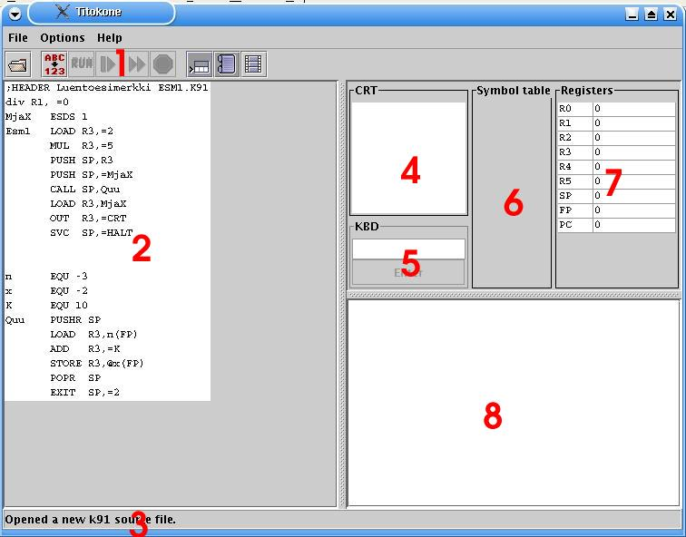

The Titokone user's manual
Contents
- Overview
- What you can do with the Titokone
- The TTK-91 machine language
- Extending and adjusting the system
- Troubleshooting
Titokone on konekielisimulaattori, jonka tarkoituksena on näyttää, kuinka symbolisen
konekielen suoritus etenee yksinkertaisella prosessorilla.
* kun kuvaillaan koodinäkymää, siinä pitää muistaa korostaa että muisti
on yhtenäinen alue vaikka siitä onkin eristetty osa koodialueeksi. Myös
maininta siitä, että data-alueella symbolisella arvolla ei ole
merkitystä (ja että suurin osa komennoista on jonkinlaisia noppeja)
lienee hyvästä.
* näppäinshortcutit, jahka varmistuvat, mukaan kuvauksiin.
|

|
- Valikot
- Source code
- Status
- Display
- Keyboard input
- Symbol table
- Registers
- Comments
|

2.1 Using Titokone
Titokone on toteutettu javalla ja se käynnistetään jar-paketista.

|
2.2 Opening a TTK-91-program
|

|
Titokoneella pystytään ajamaan kahden tyyppisiä
ohjelmatiedostoja: symbolisessa muodossa olevia
lähdekooditiedostoja ja binääritiedostoja.
Lähdekooditiedostot on ensin käännettävä,
jotta niitä voidaan ajaa. Käännetty ohjelma tallentuu
automaattisesti oletushakemistoon binäärimuodossa.
Lähdekooditiedoston oletuspääte on K91 ja
binääritiedoston B91. Ohjelma avataan painamalla
pikakuvaketta tai valitsemalla tiedostovalikosta
kohta 'avaa'.
|

|
2.3 Compiling TTK-91-program
|

|
Kääntäminen aloitetaan painamalla pikakuvaketta tai valitsemalla tiedostovalikosta
kohta 'käännä'. Kääntäminen jatkuu käyttäjän asetusten(LINKKI / KTS kohta) mukaisesti;
joko pysähdellen tai kerralla loppuun asti kääntäen. Jos kääntäminen on pysähtynyt tietylle
riville, kääntämistä jatketaan painamalla (KELAA).
|

|
Kääntämistä voi suorittaa askel kerrallaan, edeten seuraavaan tapahtumaan asti.
|

|
Halutessaan käyttäjä voi suorittaa käännöksen kerralla loppuun painamalla.
|
Käännös pysähtyy, jos lähdekoodissa tapahtui virhe. Virheestä ilmoitetaan
alapalkissa (STATUSBAR).
ON SYYTÄ KIRJOITTAA MYÖS TÄNNE: Käyttöohjeessa pitää mainita, että kunkin rivin muokkaus tulee voimaan
vasta, kun siltä riviltä poistutaan; muuten kääntäjä ei saa muokatun
rivin tietoja mukaansa. (Ja sitten että se tallentaa silloin ja tolloin
blahblah.)
Tähän liittyen: Olli, laita käyttöohjeen "lisättäviä juttuja"
-listallesi koodin muokkauksen toiminnan ohje. Eli se tallentaa koodin
milloin tarkalleen, Arto? Ilmeisesti kun muutettu koodi laitetaan
uudestaan kääntymään, mutta tapahtuuko sitä muulloinkin?

|
2.4 TTK-91-ohjelman suoritus
|
|
Tähän kuva
|
Tätä nappia painamalla suoritetaan ohjelman ajaminen. |
2.6 Saving TTK-91 binary file
2.x Changing compiling options
2.x Erasing memory
2.x Changing the size of the memory
2.x Language properties
======================================================================
YHTEENVETO TTK-91-KÄSKYISTÄ
======================================================================
+--------------------------------------------------------------------+
¦ Käskykoodi ¦ Rj ¦ M ¦ Ri ¦ osoiteosa ADDR ¦
¦ 8 bittiä ¦ 3 ¦ 2 ¦ 3 ¦ 16 bittiä ¦
+--------------------------------------------------------------------+
31 24 23 16 15 0
Symbolisessa konekielessä käskyt esitetään muodossa
VIITE OPER Rj,M ADDR(Ri)
missä OPER käskyn symbolinen nimi
Rj ensimmäinen operandi (rekisteri R0..R7)
M osoitusmoodi:
= välitön operandi
suora osoitus (tyhjä, ei siis merkitä)
@ epäsuora osoitus
ADDR osoiteosa (muistiosoite tai vakio)
Ri mahdollinen indeksirekisteri (rekisteri R0..R7)
Jos jollakin käskyn osalla ei ole merkitystä, sen voi jättää merkitse-
mättä. Käskyn eteen voi laittaa viitteeksi symbolisen osoitteen, jonka
tulee sisältää vähintään yksi muu kuin numeromerkki. Kelvollisia merkkejä
A-Ö, 0-9 ja _. Vain 8 ensimmäistä merkkiä on merkitseviä.
Lähes kaikille käskyille on käytettävissä seuraavat muodot:
OPER Rj,ADDR suora muistiosoitus
OPER Rj,=ADDR välitön operandi
OPER Rj,@ADDR epäsuora muistiosoitus
OPER Rj,ADDR(Ri) indeksoitu osoitus
OPER Rj,=ADDR(Ri) indeksoitu välitön osoitus
OPER Rj,@ADDR(Ri) indeksoitu epäsuora muistiosoitus
OPER Rj,Ri suora rekisteriosoitus
Poikkeuksia ovat:
STORE jälkimmäinen operandi on aina kohdeosoite,
ei voi olla rekisteri, tai vakio.
POP Jälkimmäisen operandin tulee aina olla rekisteri
HYPPYKÄSKYT jälkimmäinen operandi on aina kohdeosoite,
ei voi olla vakio
tilarekisteriä tutkivissa käskyissä on ensimmäinen
operandi merkityksetön
NOP operandeilla ei merkitystä
======================================================================
TTK-91 symbolisen konekielen käskyt
======================================================================
Tiedonsiirtokäskyt:
LOAD vie jälkimmäisen operandin arvon rekisterin Rj arvoksi.
STORE talleta rekisterissä Rj oleva kokonaisluku jälkimmäisen operan-
din arvoksi.
IN lukee jälkimmäisenä operandina kerrotulta laitteelta kokonaislu-
vun rekisteriin Rj (näppäimistöltä esim IN R1,=KBD)
OUT tulostaa rekisterissä Rj olevan kokonaisluvun jälkimmäisenä
operandina kerrotulle laitteelle (näytölle esim. OUT R1,=CRT)
Aritmeettiset ja loogiset käskyt:
ADD (add) lisää rekisterissä Rj olevaan lukuun jälkimmäisen operan-
din arvon.
SUB (subtract) vähennä rekisterissä Rj olevasta luvusta jälkimmäisen
operandin arvon.
MUL (multiply) kerro rekisterissä Rj oleva luku jälkimmäisen operan-
din arvolla.
DIV (divide) jaa rekisterissä Rj oleva luku jälkimmäisen operandin
arvolla. Jakolaskussa vain kokonaisosalla on merkitystä.
MOD (modulo) jaa rekisterissä Rj oleva luku jälkimmäisen operandin
arvolla. Jakolaskussa vain jakojäännösosalla on merkitystä.
AND (boolean AND) looginen JA-operaatio Rj:n ja jälkimmäisen
operandin arvon välillä.
OR (boolean OR) looginen TAI-operaatio Rj:n ja jälkimmäisen
operandin arvon välillä.
XOR (boolean XOR) looginen poissulkeva TAI-operaatio Rj:n ja
jälkimmäisen operandin arvon välillä.
SHL (shift left) siirrä rekisterin Rj bittejä vasemmalle toisen
operandin ilmoittama määrä. Täytä oikeaa päätä 0-biteillä.
SHR (shift right) kuten SHL, mutta siirrä oikealle.
SHRA (arithmetic shift right) kuten SHR, mutta säilyttäen etumerkin
(täytä vasenta päätä etumerkkibitillä).
COMP (compare) vertaa ensimmäisen operandin arvoa toisen operandin
arvoon ja aseta vertailun tulos tilarekisterin bitteihin SR
L=pienempi, E=yhtäsuuri, G=suurempi.
Haarautumiskäskyt:
JUMP (unconditional jump) ehdoton hyppy toisen operandin ilmaisemaan
kohdeosoitteeseen.
JNEG (jump if negative) jos Rj < 0, niin hyppää jälkimmäisenä operan-
dina olevaan osoitteeseen, muuten jatka seuraavasta käskystä.
JZER (jump if zero) jos Rj = 0
JPOS (jump if positive) jos Rj > 0
JNNEG (jump if not negative) jos Rj >= 0
JNZER (jump if not zero) jos Rj <> 0
JNPOS (jump if not positive) jos Rj <= 0
JLES (jump if less) jos tilarekisterin SR bitti L asetettu, niin
hyppää jälkimmäisenä operandina olevaan osoitteeseen, muuten
jatka seuraavasta käskystä (käyttö COMP-käskyn yhteydessä).
JEQU (jump if equal) jos bitti E asetettu
JGRE (jump if greater) jos bitti G asetettu
JNLES (jump if not less) jos bitti E tai G asetettu
JNEQU (jump if not equal) jos bitti L tai G asetettu
JNGRE (jump if not greater) jos bitti L tai E asetettu
Pinokäskyt:
Käskyn ensimmäinen operandi rekisteri Rj osoittaa pinon huipulle pinon
päällimmäiseen alkioon. Pino-osoittimena käytetään tavallisesti rekiste-
riä SP (eli R6).
PUSH Kasvata pino-osoittimen Rj arvoa yhdellä ja vie jälkimmäinen
operandi pinon päällimmäiseksi alkioksi.
POP Poista pinosta päällimmäinen alkio ja vie se jälkimmäisenä
operandina kerrottuun rekisteriin (HUOM: aina rekisteri).
Vähennä pino-osoittimen Rj arvoa yhdellä.
PUSHR Vie pinoon rekisterit R0, R1, R2, R3, R4, R5 ja R6 (SP) tässä
järjestyksessä. Ennen kunkin rekisterin vientiä kasvata pino-
osoittimen Rj arvoa yhdellä.
POPR Nouda pinosta arvot rekistereihin R6 (SP), R5, R4, R3, R2, R1 ja
R0 tässä järjestyksessä. Jokaisella noudolla hae ensin arvo
pino-osoittimen Rj osoittamasta kohdasta kyseiseen rekisteriin
ja sen jälkeen vähennä pino-osoittimen Rj arvoa yhdellä.
Aliohjelmakäskyt:
CALL (call procedure) aliohjelmakutsu, eli kontrollin siirto toisen
operandin ilmoittamaan osoitteeseen. Tallettaa paluuosoitteen
pinoon, jonka huipulle osoittaa Rj.
EXIT palaa aliohjelmasta kutsua seuraavaan käskyyn. Paluuosoite löytyy
pinosta, jonka huipulle osoittaa Rj. Jälkimmäisenä operandina
pinossa välitettyjen parametrien lukumäärä.
Systeemikutsut:
SVC (supervisor call) käyttöjärjestelmän palvelurutiinin kutsu.
(systeemikutsu). Ensimmäisenä operandi pinon huippu Rj ja toisena
operandina palvelun numero. Palvelurutiinikutsut ovat erikoisia
kutsuja ennalta määrättyihin aliohjelmiin. Rutiinien koodi on
näkymättömissä, koodialueen "ulkopuolella".
Palvelunumeroita:
HALT : Lopettaa ohjelman suorituksen.
TIME : Antaa kellonajan. Pinossa välitettävä osoitteet, jonne
halutaan tunnit, minuutit, sekunnit (HUOM: järjestys!).
DATE : Antaa päiväyksen. Pinossa välitettävä osoitteet, jonne
halutaan vuosi, kuukausi ja päivä. (HUOM: järjestys!).
READ : Lukee kokonaisluvun. Pinossa välitettävä osoite, jonne
luku halutaan luettavan.
WRITE: Kirjoittaa kokonaisluvun. Pinossa välitettävä tulostettava
arvo.
Muita:
NOP (no operation) ei toimintaa
======================================================================
TTK-91-konekielen käskykoodit
======================================================================
Käsky Binääri Desimaali Heksadesimaali
NOP 0000 0000 0 00
STORE 0000 0001 1 01
LOAD 0000 0010 2 02
IN 0000 0011 3 03
OUT 0000 0100 4 04
ADD 0001 0001 17 11
SUB 0001 0010 18 12
MUL 0001 0011 19 13
DIV 0001 0100 20 14
MOD 0001 0101 21 15
AND 0001 0110 22 16
OR 0001 0111 23 17
XOR 0001 1000 24 18
SHL 0001 1001 25 19
SHR 0001 1010 26 1A
SHRA 0001 1011 27 1B
COMP 0001 1111 31 1F
JUMP 0010 0000 32 20
JNEG 0010 0001 33 21
JZER 0010 0010 34 22
JPOS 0010 0011 35 23
JNNEG 0010 0100 36 24
JNZER 0010 0101 37 25
JNPOS 0010 0110 38 26
JLES 0010 0111 39 27
JEQU 0010 1000 40 28
JGRE 0010 1001 41 29
JNLES 0010 1010 42 2A
JNEQU 0010 1011 43 2B
JNGRE 0010 1100 44 2C
CALL 0011 0001 49 31
EXIT 0011 0010 50 32
PUSH 0011 0011 51 33
POP 0011 0100 52 34
PUSHR 0011 0101 53 35
POPR 0011 0110 54 36
SVC 0111 0000 112 70
======================================================================
TTK-91-koneen ennalta määrätyt symbolit
======================================================================
Näitä symboleja voi käyttää TTK-91-ohjelmassa niitä erikseen
määrittelemättä.
Symboli Arvo
--------------------
CRT 0
KBD 1
STDIN 6
STDOUT 7
HALT 11
READ 12
WRITE 13
TIME 14
DATE 15
======================================================================
Kääntäjän ohjauskäskyt (valekäskyt)
======================================================================
Kääntäjän ohjauskäskyt antavat ohjeita symbolisen konekielen kääntäjäl-
le. Ne EIVÄT ole varsinaisia symbolisen konekielen käskyjä.
tunnus EQU arvo
Samaistuskäsky EQU määrittelee symboliselle tunnukselle kokonaislukuar-
von. Tunnusta voi käyttää käskyn ADDR -kentässä, jolloin se käsitellään
kuten vastaavaan paikkaan kirjoitettu "arvo".
tunnus DC arvo
Muistinvarauskäsky DC (data constant) varaa yhden muistisanan vakiota
varten, samaistaa varatun muistipaikan osoitteen ja symbolisen osoitteen
"tunnus" sekä asettaa varatun muistipaikan sisällöksi luvun "arvo".
Tunnusta voi käyttää käskyn ADDR-kentässä kuten muistiosoitetta.
tunnus DS koko
Muistinvarauskäsky DS (data segment) varaa muistialueen, jonka koko on
"koko" (sanoina) ja samaistaa varatun muistialueen alkuosoitteen ja
symbolisen osoitteen "tunnus". Käytetään globaalien muuttujien tilanva-
raukseen. Tunnusta voi käyttää käskyn ADDR -kentässä kuten muistiosoi-
tetta.
asetus DEF merkkijono
DEF muuttaa TTK-91-koneen tiedostojärjestelmän simulointiasetuksia.
Merkkijonon 'merkkijono' tulee olla absoluuttinen tiedostopolku.
Esimerkkejä:
STDIN DEF /home/myuser/ttk91/stdin
STDOUT DEF C:\mydir\stdout
Muutettavat asetukset:
STDIN Stdin-datan lähdetiedosto.
STDOUT Stdout-datan kohdetiedosto.
HOME Käyttäjän kotihakemisto. Titokoneessa tätä ei käytetä, vaan
kotihakemisto kysytään Javan virtuaalikoneen kautta itse
käyttöjärjestelmältä.
Oletustiedostot kahdelle ensimmäiselle ovat stdin ja stdout käyttäjän
kotihakemistossa.
4.1 Asetustiedostot
4.2 Uuden kielen tukeminen
* oman käännöstiedoston valitsijan pitää varmistaa, ettei
käännöstiedostossa ole pakettimäärettä - muuten sen avaaminen
epäonnistuu (fi.hu.cs.titokone.resources.Translationsia ei voi avata
tiedostosta, mutta pelkän Translationsin voi - mutta sen nimi riippuu
siitä onko itse java-tiedostossa 'package'-määre). Tekijä voi ottaa
käännösten pohjaksi Translations.javan, jossa on ohjeita tähän; mallia
tiedoston saattamisesta käytettäväksi kannattaa kuitenkin ottaa muista
käännöksistä, tässä tapauksessa Translations_fi.javasta.
Kun ohjelma latautuu käännöksen tai ajon
päättymisen jälkeen, saan kommenttikenttään virheilmoituksen muotoa
"STDIN-datatiedostoa ei voi lukea: /minun/hakemistoni/stdin (Joku
syy)".
Ohjelma ilmoittaa vain, että mikäli
tulevaisuudessa näillä asetuksilla joku TTK-91-sovellus yrittää
lukea STDIN-laitteelta, luku epäonnistuu ellei jotain tehdä
asialle. "Joku syy" -osuus kertoo, mikä järjestelmän antama
virheilmoitus oli kun tiedostoa luettiin. Jos sovelluksesi tarvitsee
STDIN-laitetta, korjaa tiedoston tilanne ja lataa sovellus
uudelleen. Ks. myös
2.5, TTK-91-ohjelman
lataaminen.
On tylsää.
* virheilmoitukset pitää käydä läpi ja selvittää, mitä kukin tarkoittaa.
Tätä pitänee tehdä osittain ryhmässä tai ainakin kysellen.
---------------------
eka:
Puhuin viime kokouksessa, että olen ottanut GUIhin Look And Feel -jutut mukaan, mikä saisi GUI:n näyttämään etenkin Windowsissa uskomattoman hyvältä. Harmittavasti olen kuitenkin törmännyt Javan 1.4.2 versiota riivaavaan bugiin, joka aiheuttaa yhden tietyn operaation aikana mahdollisesti Exceptionin ilman, että siihen voi itse vaikuttaa. Aluksi tuskailin kyseisen Exceptionin kanssa, kun en millään ymmärtänyt että mistä sellainen voi tulla. Sitten älysin katsastaa Googlesta parilla hyvin valitulla hakusanalla ja kappas vain, osoittautuikin että kyseessä on ihan raportoitu bugi. Bugin numero on 4711700 ja suora linkki raporttiin on http://developer.java.sun.com/developer/bugParade/bugs/4711700.html
Mahdollisesti bugin voi kiertää parilla lisärivillä koodia, mutta se maksaa silloin tällöin pidemmällä latausajalla enkä voi taata että ohjelma välttämättä edes käynnistyy joka kerta. Tosin, todennäköisyys sille on koneesta rippuen 1/100. Tulevissa Javan versioissa kyseistä ongelmaa ei tietenkään ole, sillä eiköhän löydetyt bugit yleensä korjata.
Toinen mahdollisuus on, mikäli Exception tulee, ilmoittaa pahoitellen, että ohjelma ei käynnisty johtuen Javassa olevasta bugista ja pyydetään käynnistämään uudelleen. Harvoin tuo kahta kertaa peräkkäin tulee. Mun mielestä kuitenkaan ei kannata tinkiä siitä hienosta ulkonäöstä jonkun typerän bugin vuoksi, joka tuskin vaivaa enää ainakaan syksyllä, jolloin ohjelmaa oikeasti käytetään.
ennen:
On Wed, 2004-08-18 at 11:10, Arto Åkerlund wrote:
> Mahdollisesti bugin voi kiertää parilla lisärivillä koodia, mutta se
> maksaa silloin tällöin pidemmällä latausajalla enkä voi taata että
> ohjelma välttämättä edes käynnistyy joka kerta. Tosin, todennäköisyys
> sille on koneesta rippuen 1/100. Tulevissa Javan versioissa kyseistä
> ongelmaa ei tietenkään ole, sillä eiköhän löydetyt bugit yleensä
> korjata.
Hmm, laitetaan Titokoneeseen varmuuden vuoksi optio ton yli
hyppäämiseksi (jos parametrien joukossa on vaikka --disablelookandfeel,
ei tehdä lookandfeel-juttua), ja käytetään workaroundia. Olli, laitatko
itsellesi ylös että kirjaat maininnan käyttöohjeeseen?
------------------
On Sun, 2004-04-18 at 14:41, Olli Alm wrote:
> Ok, pistän korvan taakse tuon asian. Kuulostaa kyllä
> hieman enemmän toteutusdokkarin kuin käyttöohjeen asialta
> mielestäni. Mutta joo.
Siis käyttöohjeeseen se menee muodossa "voit törmätä tällaiseen
virheeseen, joka johtuu Javan 1.4.2-version bugista eikä yleensä toistu,
mutta tarvittaessa voit käyttää --disablelooknfeel -parametriä, jolloin
myös virhe poistuu". Toteutusdokkarissa voisi tietty mainita eri
parametrit joilla ohjelman voi käynnistää, mutta niille ei taida olla
juuri nyt järkevää paikkaa.
-------------------
Syö leipää ni ei o tylsää. --Jukka Tilsa